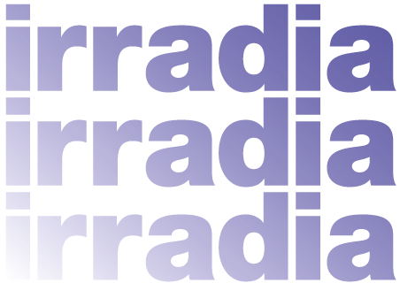

<div id="p8" class="page header">
  <div class="perspected">
    <div class="overlayer triggerFunction showing" rel="#p8"></div>
    <h1 class="title-normal" rel="#p8">
      
      <div class="title center">
        <span class="number">7</span>
        <p class="black" data-translatable>
          <span>CREDITS</span><span>CRÉDITOS</span>
        </p>
      </div>
    </h1>
    <span class="closer">
      
    </span>
    <div class="no-visible">
      <div class="box-shadow">
        <div class="pl-15 pr-15 present-paddings credits">
          <div class="center">
            <div class="text-center pb-50">
              
            </div>
            <p class="text-3 agradecimientos-text" data-translatable>
              <span>
                In 2019, the Lima Art Museum (MALI) and Fundación Telefónica
                Movistar joined forces and launched their renewed collaboration
                with the development of <i>Irradia</i>, a project that seeks to
                promote contemporary Peruvian creation in experimental media,
                while promoting the use of new technologies in the creative
                process. The project entails three main programs:
                <i>art+technology</i>, <i>art+public space</i> and
                <i>art+education</i>.</span
              ><span
                >En 2019, el Museo de Arte de Lima (MALI) y Fundación Telefónica
                Movistar se unieron y pusieron en marcha su renovada
                colaboración con el desarrollo del proyecto <i>Irradia</i> cuyo
                objetivo es el de promover la creación contemporánea peruana en
                formatos experimentales y a la vez impulsar el uso de nuevas
                tecnologías en el proceso creativo. La organización del proyecto
                gira en torno a tres ejes: <i>arte+tecnología</i>,
                <i>arte+espacio público</i> y <i>arte+educación</i>.</span
              >
            </p>
            <div class="box-img">
              <div class="box-img--item">
                <a
                  href="https://espacio.fundaciontelefonica.com.pe/"
                  target="_blank"
                  ></a>
                <a href="https://mali.pe/" target="_blank"
                  ></a>
              </div>
            </div>
            <div class="text-center credit-list">
              <ul class="pt-md-45 pt-lg-60">
                <li class="list-item-names mb-20">
                  <b data-translatable>
                    <span>General production</span>
                    <span>Producción general</span>
                  </b>
                </li>
                <li class="list-item-names">ESPACIO FUNDACIÓN TELEFÓNICA</li>
                <li class="list-item-names">Elizabeth Galdo Marin</li>
                <li class="list-item-names">Lucía García de Polavieja</li>
                <li class="list-item-names">Reina Jara</li>
                <li class="list-item-names">Omar Lavalle</li>
                <li class="list-item-names">Jose Carlos Goytizolo</li>
                <li class="list-item-names">Juanita Gabriel</li>
              </ul>
              <ul class="mt-20 pt-md-45 pt-lg-60">
                <li class="list-item-names">Museo de Arte de Lima - MALI</li>
                <li class="list-item-names">Sairah Espinoza</li>
                <li class="list-item-names">Sharon Lerner</li>
                <li class="list-item-names">José Carlos Mariátegui</li>
                <li class="list-item-names">Patricia Villanueva</li>
              </ul>
              <ul class="mt-20 pt-md-45 pt-lg-60">
                <li class="list-item-names">
                  <b data-translatable>
                    <span>Web design</span>
                    <span>Diseño web</span>
                  </b>
                </li>
                <li class="list-item-names">Michael Prado</li>
              </ul>
              <ul class="mt-20 pt-md-45 pt-lg-60">
                <li class="list-item-names">
                  <b data-translatable>
                    <span>Web programming</span>
                    <span>Programación web</span>
                  </b>
                </li>
                <li class="list-item-names">Lucuma Labs</li>
              </ul>
              <ul class="mt-20 pt-md-45 pt-lg-60">
                <li class="list-item-names">
                  <b data-translatable>
                    <span>Podcasts production</span>
                    <span>Producción podcasts</span>
                  </b>
                </li>
                <li class="list-item-names">Renzo Belón</li>
              </ul>
              <ul class="mt-20 pt-md-45 pt-lg-60">
                <li class="list-item-names">
                  <b data-translatable>
                    <span>Musical advisory & Podcasts sound landscape</span>
                    <span>Asesoría musical & Paisaje sonoro podcasts</span>
                  </b>
                </li>
                <li class="list-item-names">Teté Leguía</li>
              </ul>
              <ul class="mt-20 pt-md-45 pt-lg-60">
                <li class="list-item-names">
                  <b data-translatable>
                    <span>Locution</span>
                    <span>Locución</span>
                  </b>
                </li>
                <li class="list-item-names">Micky Bane</li>
              </ul>
              <ul class="mt-20 pt-md-45 pt-lg-60">
                <li class="list-item-names">
                  <b data-translatable>
                    <span>Layout</span>
                    <span>Diagramación</span>
                  </b>
                </li>
                <li class="list-item-names">Natalia Revilla</li>
              </ul>
              <ul class="mt-20 pt-md-45 pt-lg-60">
                <li class="list-item-names">
                  <b data-translatable>
                    <span>Photography of lighthouses</span>
                    <span>Fotografía de faros</span>
                  </b>
                </li>
                <li class="list-item-names">José Balta</li>
              </ul>
              <ul class="mt-20 pt-md-45 pt-lg-60">
                <li class="list-item-names">
                  <b data-translatable>
                    <span>Translations</span>
                    <span>Traducciones</span>
                  </b>
                </li>
                <li class="list-item-names">Julia Branco</li>
                <li class="list-item-names">Max Hernández Calvo</li>
                <li class="list-item-names">Denisse Martínez</li>
                <li class="list-item-names">Robin Myers</li>
                <li class="list-item-names">Servidioma</li>
              </ul>
            </div>
            <div class="agradecimientos-text2">
              <p class="m-0">
                <span class="text-decoration" data-translatable
                  ><span>Acknowledgments</span
                  ><span>Agradecimientos:</span></span
                >
                Gabriel Acevedo, Luis Alvarado, Nicole Aragi, Antoinette
                Arévalo, Richi Balarezo, María Balarín, José Balta, Micky Bane,
                Ralph Bauer, Juan Enrique Bedoya, Renzo Belón, Laura Benetti,
                Julia Branco, Macri Cáceres, Anne Carson, Lucia Castello Branco,
                Judith Changa, Orieta Chrem, Felipe Cussen, Paulo Dam, Vered
                Engelhard, Rafael Espinosa, Sairah Espinoza, Gabriela Ezeta,
                Safaa Fathy, Charles Fonlupt, Melanie Gallagher, Flavia
                Gandolfo, Berenice González, José Carlos Goytisolo, Lucía García
                de Polavieja, Pablo Hare, Max Hernández Calvo, Blas
                Lafferranderie, Emilio J. Lafferranderie, Julián Lafferranderie,
                Mirko Lauer, Omar Lavalle, Teté Leguía, Sharon Lerner, Miguel A.
                López, José Carlos Mariátegui, Denisse Martínez, Benjamin Mayer
                Foulkes, Yuvissa Mijulovich, Carolina Moreno, Samantha Muñoz,
                Robin Myers, Jorge Ortiz Sotelo, Phoebe Osborne, José Ignacio
                Padilla, Paruro [Danny Caballero], Santiago Pillado-Matheu,
                Michael Prado, Salvador Prado, Ignacio Prudencio, Nicole Remy,
                Natalia Revilla, Diego Rodríguez-Arnaiz, Juan Salas, Janine
                Soenens, Maya Solovej, Peter Szendy, Mariana Tschudi, Luis
                Velito, Rodrigo Vera, Santiago Vera, Camila Villa, Patricia
                Villanueva, Luisa Yupa, Verónica Zondek
              </p>
            </div>
          </div>
        </div>
        
        <div class="center advice">
          <p class="text-1" data-translatable>
            <span
              >All the lighthouses of the peruvian coast is part of the Irradia
              project, a joint initiative of MALI and the Fundación Telefónica
              Movistar to promote the use of digital means of production as
              encouragement for artistic creation.</span
            >
            <span
              >Todos los faros de la costa peruana forma parte del proyecto
              Irradia, una iniciativa conjunta del MALI y la Fundación
              Telefónica Movistar para promover la utilización de los medios de
              producción digital como estímulo para la creación artística.</span
            >
          </p>
        </div>
      </div>
      {% include 'nav-list.html' %}
      
      {% include 'send.html' %}
    </div>
  </div>
</div>
